Stage00→10 现在是真正可执行的 state machine，不再只是脚本和历史文件夹。
每个 stage 都记录 inputs、parameters、outputs、QC、environment 和 state。局部失效只重跑下游；修改 extraction 不会重新做 registration。
Raw TIFF → per-ROI → release
从一个空 project 开始，走的就是未来新 dataset 使用的同一条命令路径。
每个完成的 session 都会留下真正可检查的 run record。
carma report PROJECT 自动生成 Stage00→10 ledger、provenance/QC、ROI overlay、per-ROI authority、单 ROI mask + 连续 trace + event-aligned trace + trial heatmap；如果存在 Stage08 candidate，还会生成独立 reviewer queue。
ROI ID 不重编号
cold-start 特意使用非连续 ROI ID，验证 Stage02→03→06→09 以及 report 全程保持原 ID。
本地直接打开
生成后的 report 可以直接双击打开，不要求另起 local web server。
Release gate
stage state、source hash、QC、release manifest 与可视化层分开保存。
Stage07 → Stage08 → 两名独立 reviewer → release refreeze 已经端到端跑通。
两天 fixture 使用完全不同、非连续的 ROI ID，因此通过测试必须依赖真正的跨天映射，而不是复用 ID。
Stage-major scheduler
所有 session 先一起完成 Stage01/02，之后才进入 Stage07/08。
Ground-truth pairs
11→101、24→205、37→309、58→444；全部 reciprocal-nearest，最大距离 2.15 px。
Image evidence
全图配准相关 0.946；candidate local correlation 为 0.915–0.916。
Reviewer consensus
两名独立 reviewer；0 unresolved、0 one-to-one conflict。
Release refreeze
consensus 会使 Stage09/10 失效；两者随后重跑并重新 freeze release。
Regression record
Stage00→10 现在每一步都有可以直接检查的中间图。
这里的 11 张图来自 two-session raw-movie regression，用来明确展示每一步的输入、改变和输出；下方 ANM54 D6 则是同一逻辑在真实数据上的 checkpoint。
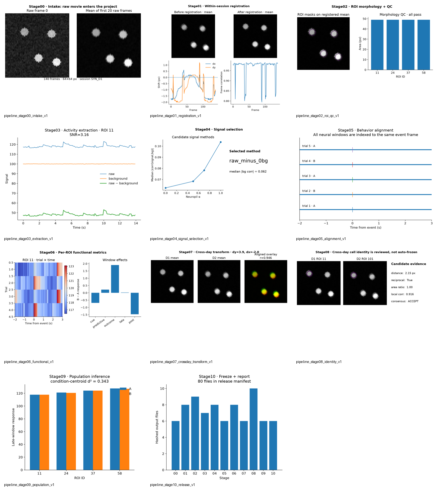
整条 pipeline 一眼看完
Raw movie → registration → ROI QC → extraction → signal selection → alignment → per-ROI metrics → cross-day transform → reviewed identity → population inference → frozen release。
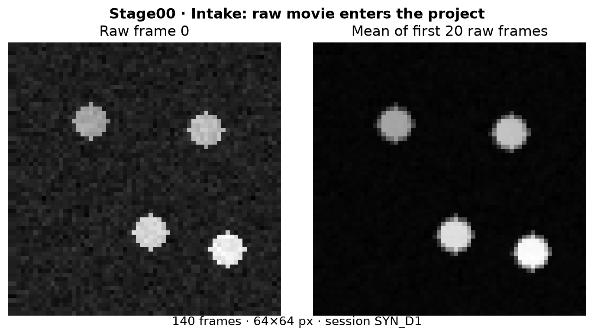
Stage00 · Intake · raw movie
Raw frame and short raw mean; confirms what enters Stage00. SVG

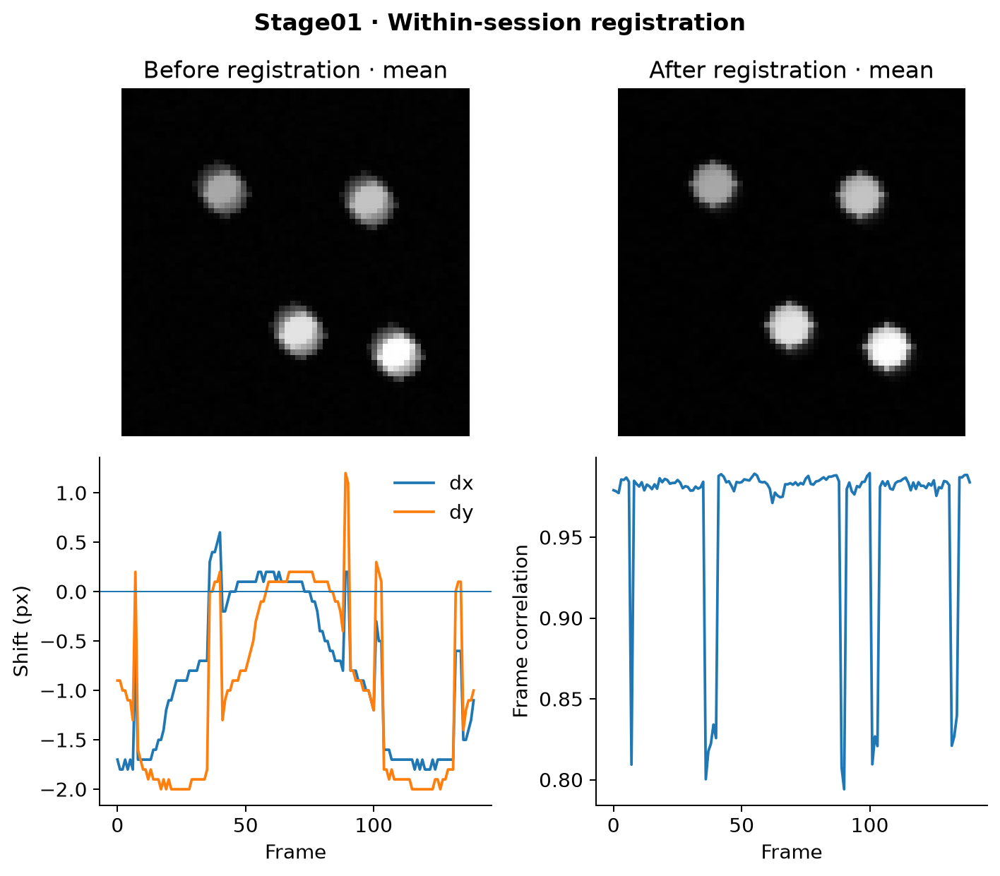
Stage01 · Registration
Before/after mean image plus frame-wise dx/dy and frame correlation. SVG

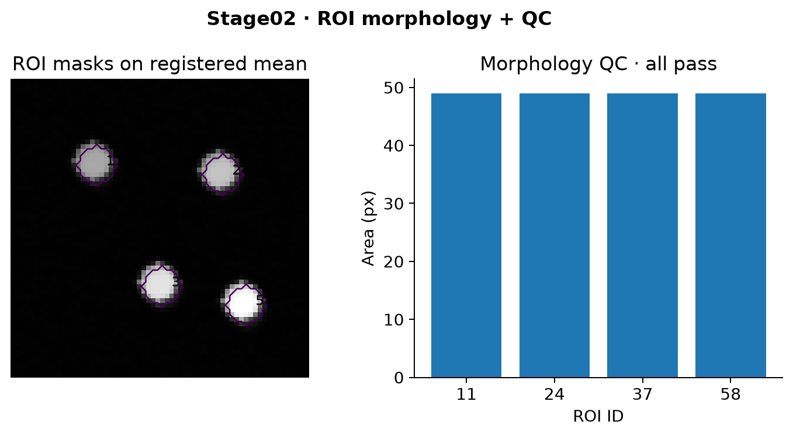
Stage02 · ROI morphology + QC
ROI masks on registered mean image and morphology area check. SVG

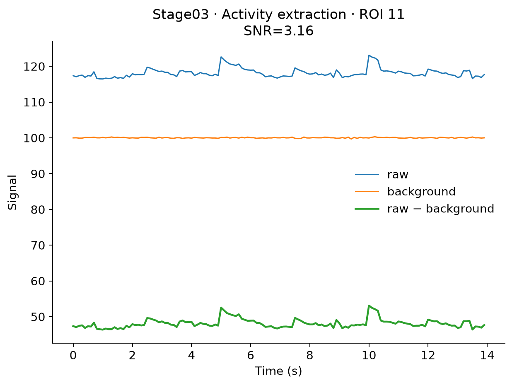
Stage03 · Activity extraction
Raw ROI trace, local background and background-subtracted signal. SVG

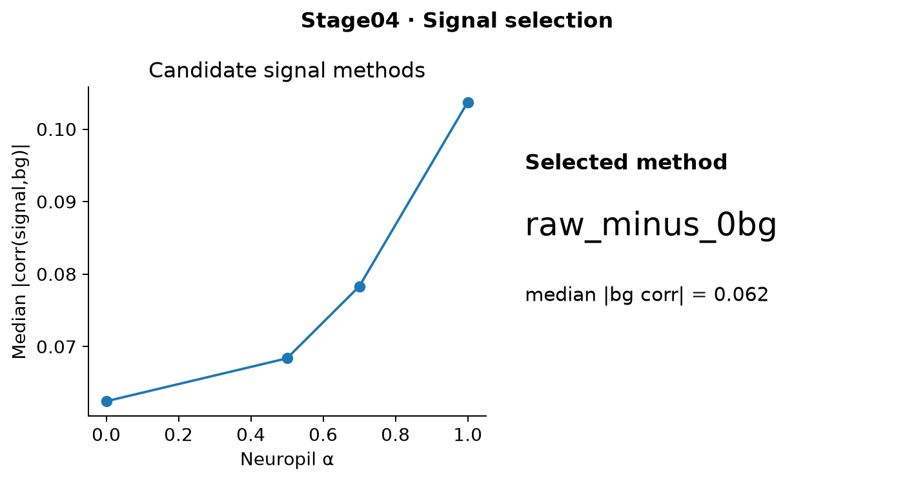
Stage04 · Signal selection
Neuropil subtraction candidates and the selected signal method. SVG

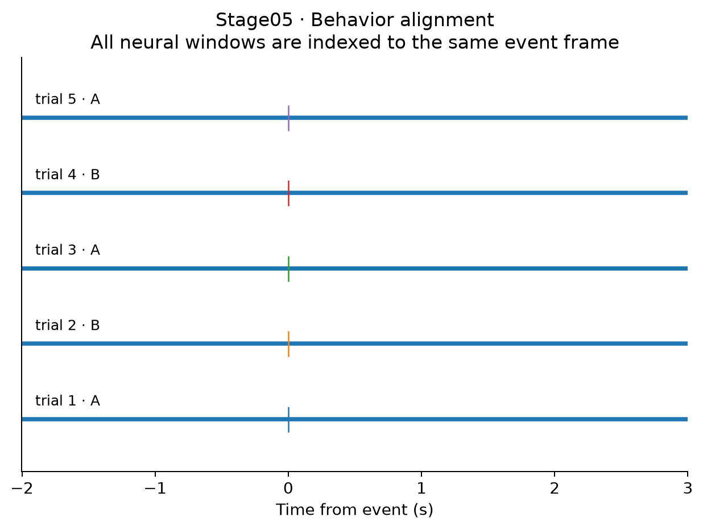
Stage05 · Behavior alignment
Trial/event alignment that defines the shared neural analysis windows. SVG

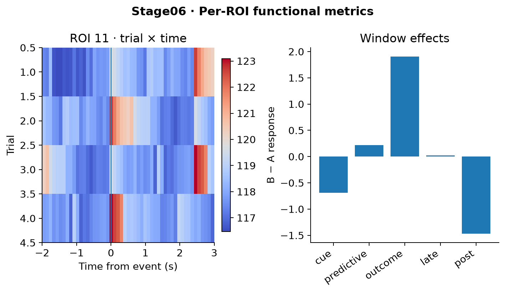
Stage06 · Functional metrics
Single-ROI trial × time heatmap plus cue/predictive/outcome/late/post effects. SVG

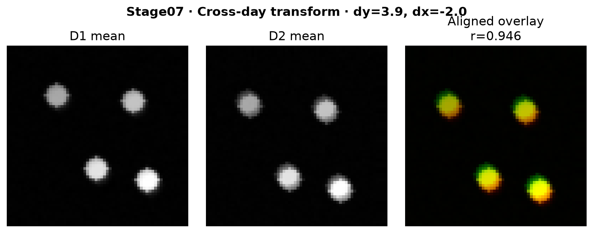
Stage07 · Cross-day transform
D1, D2 and registered overlay; whole-image r=0.946 in regression. SVG

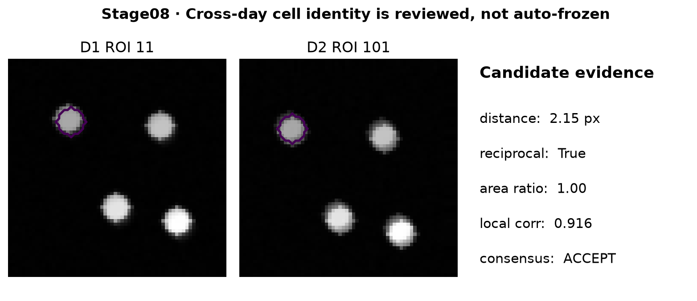
Stage08 · Cell identity review
Paired ROI evidence with distance, reciprocal match, area ratio, local correlation and consensus. SVG

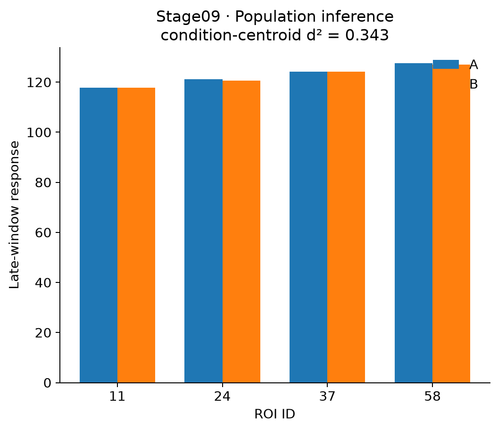
Stage09 · Population inference
Condition-level population output after per-ROI authority is fixed. SVG

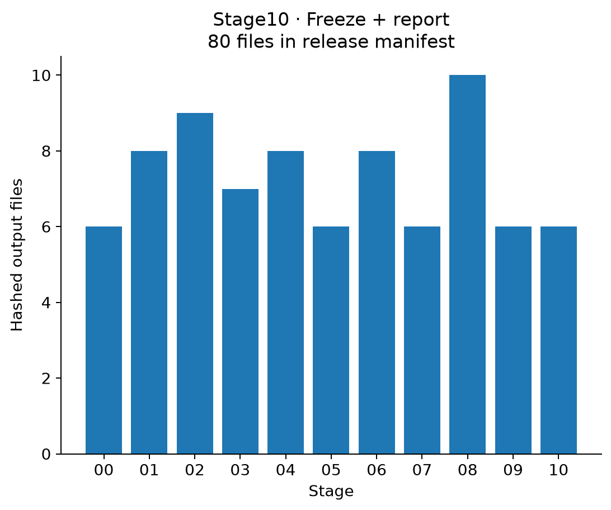
Stage10 · Freeze + report
Hashed release contents by stage; final reproducible output boundary. SVG

不是只有 synthetic demo。
下面是 ANM54 Day19 / D6（100E vs 100E+Q）的真实 derived QC/result 图；公开页面不包含 raw movie 或本机私有路径。
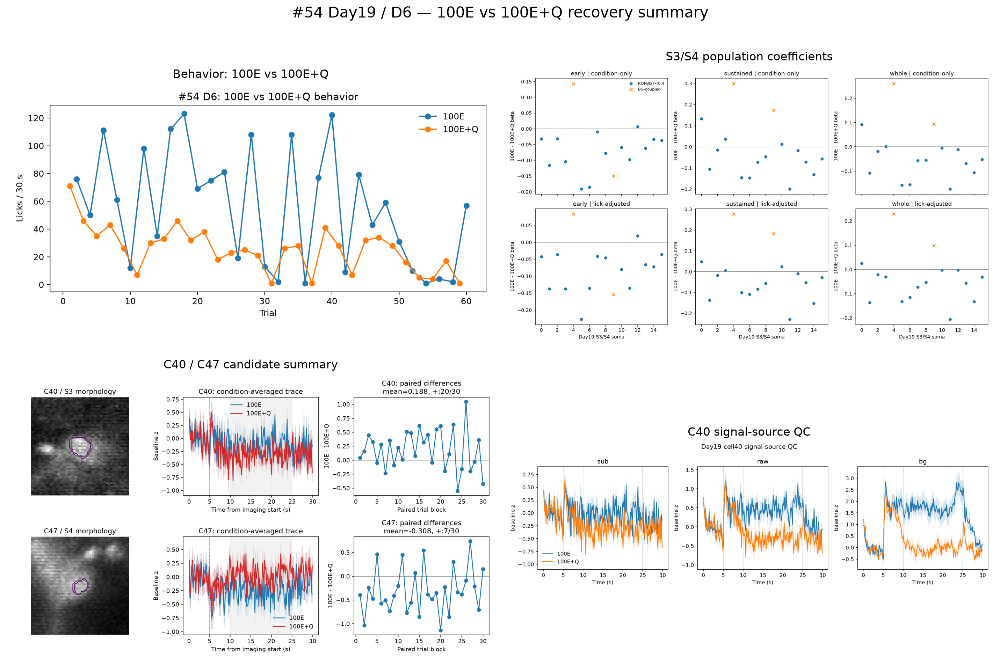
ANM54 D6 · one-page recovery summary
行为、S3/S4 population coefficients、candidate morphology/traces 与 signal-source QC。
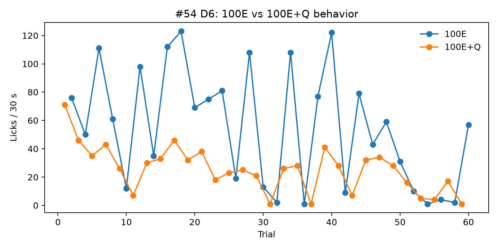
Behavior alignment checkpoint
100E 与 100E+Q 的逐 trial 行为，用于锚定神经分析。
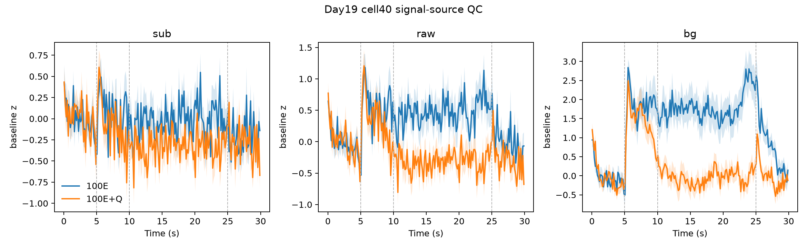
Signal-source QC
真实细胞的 subtracted、raw、background signal 对比。
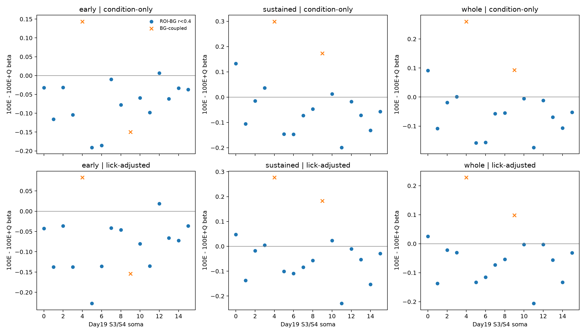
Population value-axis result
经过 extraction/QC 后的真实 population representation。